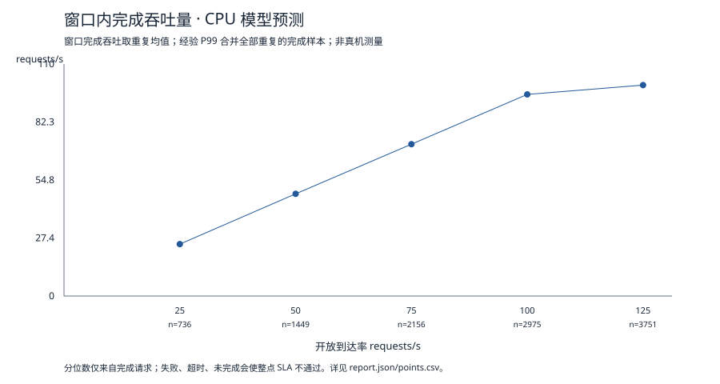
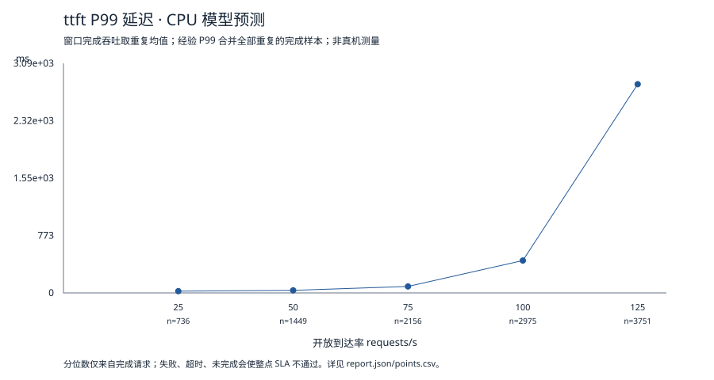
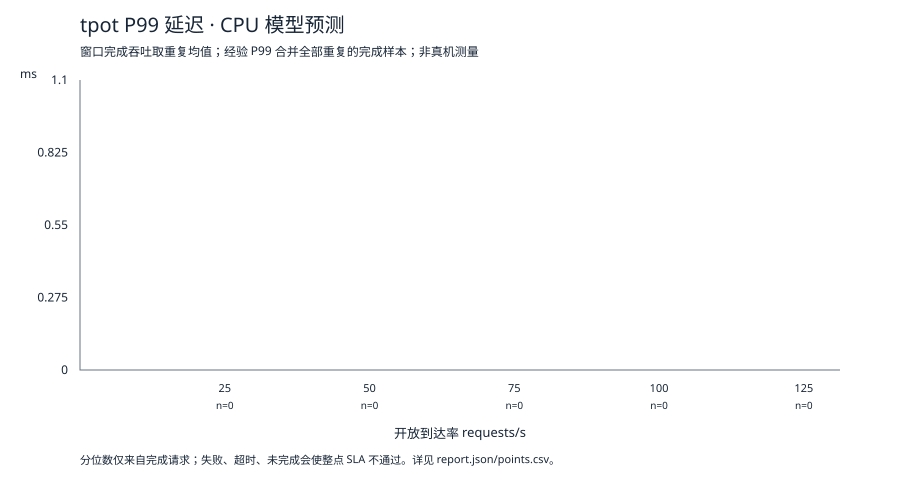
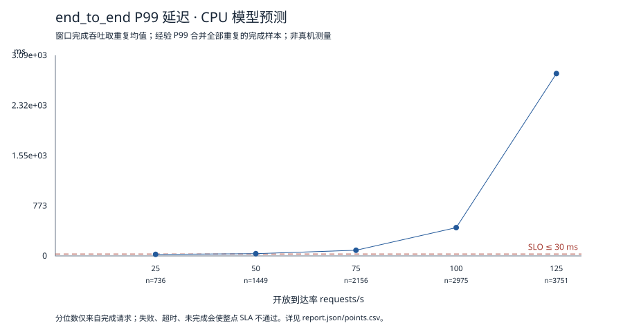

本报告为 CPU 模型预测；没有新增真机测量。扫描轴为 开放到达率 requests/s，共 5 点，
每点 3 次独立重复。SLO 阈值：{"p99_e2e_ms": 30}。
经验 P99 仅来自完成请求，但失败、超时、未完成会否决整点 SLO；空样本或低于声明最小样本数返回未知。 各重复均须通过，不能只选健康 seed。窗口内完成吞吐按窗口内完成数 / 窗口时长计算， 原模拟器包含 drain 的到达队列吞吐另保留在 CSV / JSON，不等同于设备稳态服务率。
| 开放到达率 requests/s | 有限观察判据 | SLO 通过 | 完成 n | 窗口吞吐 req/s | E2E P99 ms | 各重复 SLO |
|---|---|---|---|---|---|---|
| 25 | observed_stable | True | 736 | 24.5333 | 23.8176 | [True, True, True] |
| 50 | observed_stable | False | 1449 | 48.3 | 34.7508 | [False, False, False] |
| 75 | observed_stable | False | 2156 | 71.7667 | 87.4717 | [False, False, False] |
| 100 | observed_stable | False | 2975 | 95.3 | 436.367 | [False, False, False] |
| 125 | observed_overloaded | False | 3751 | 99.7 | 2811.67 | [False, False, False] |




仅报告相邻网格 bracket 和实际观察到的最大通过点，不插值、不外推。 随机曲线可非单调；有限时间中的排队增长和 drain 完成情况不是数学稳定性证明。 闭环 client 数表示在线用户，独立于调度器 max_batch_size。
{
"sla_max_observed": 25,
"last_observed_stable_rps": 100,
"stable_overloaded_brackets": [
{
"stable": 100,
"overloaded": 125,
"resolution_rps": 25
}
],
"slo_pass_fail_brackets": [
{
"pass": 25,
"fail": 50,
"resolution": 25,
"axis": "offered_rps"
}
],
"slo_nonmonotonic": false,
"p99_decreases_on_grid": false,
"stability_nonmonotonic": false
}
可审计源：完整报告与生成请求、逐重复指标 CSV、
runs/ 下逐次原结果、事件及 provenance。经验分位数采用 (n−1)q 的线性插值。